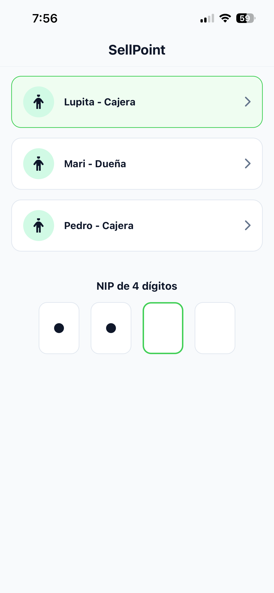
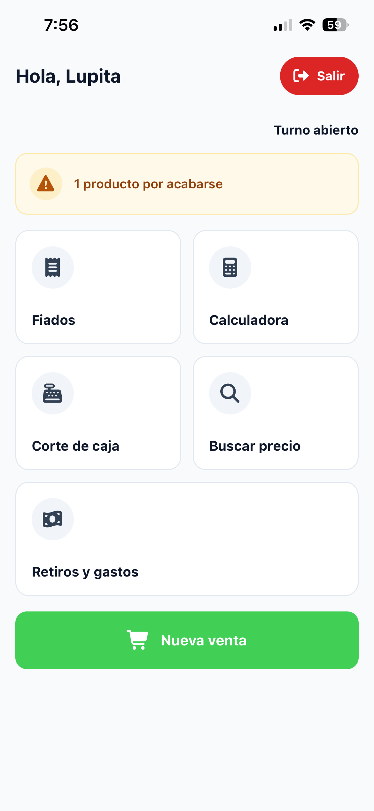
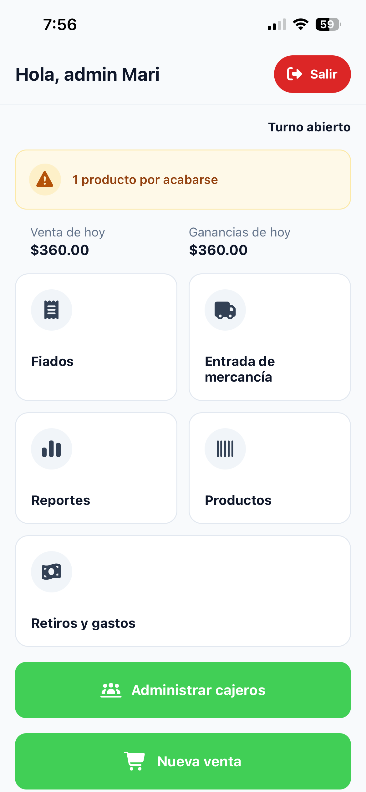
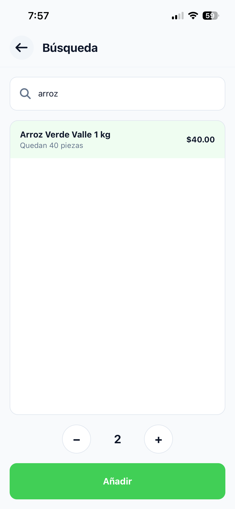
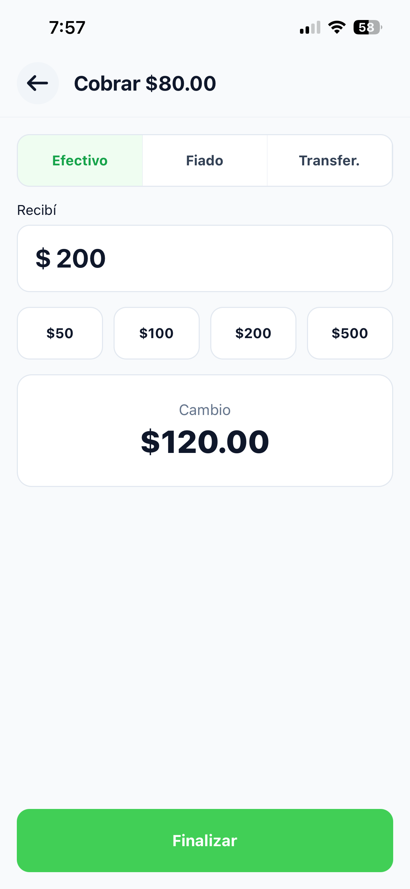
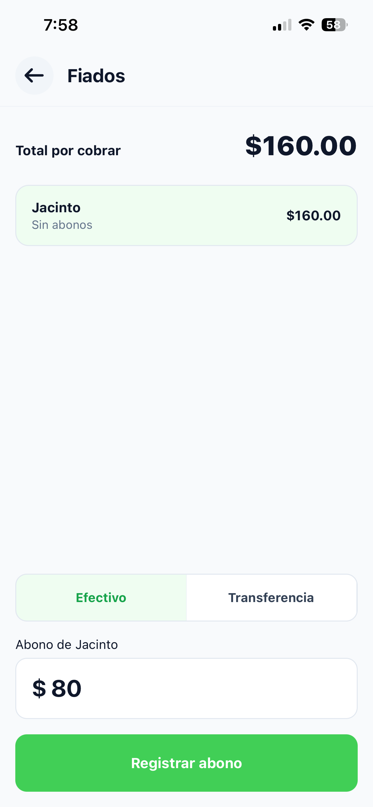
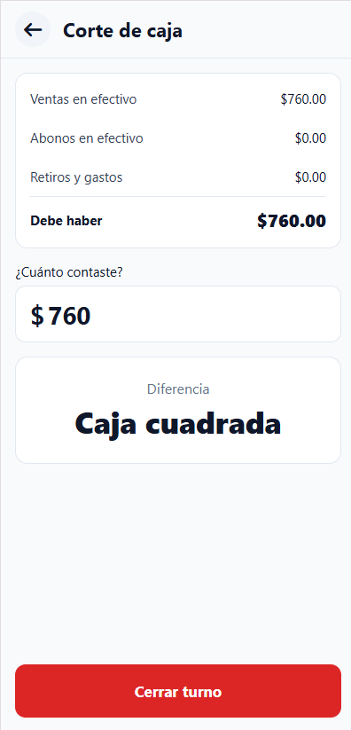
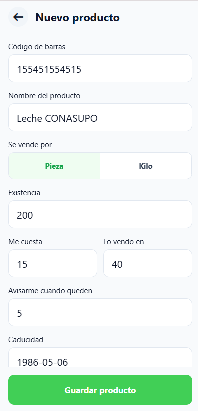
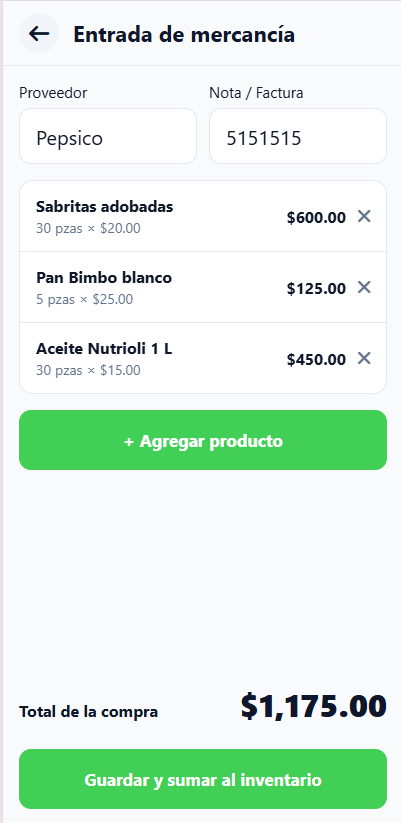
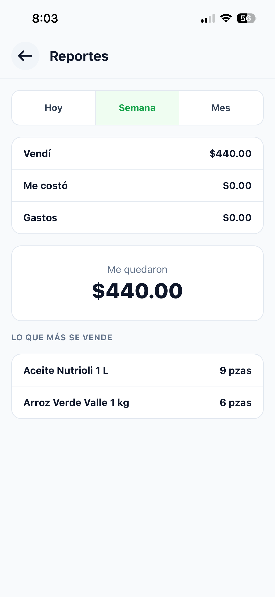

Abarrotes Doña Mari
SellPoint
Manual de usuario
Para cajeras y dueña de la tienda
Introducción
SellPoint es una app para el celular que te ayuda a vender en la tienda. Con ella cobras, llevas los fiados, anotas los gastos y haces el corte de caja al final del turno. La dueña además puede ver cuánto se vendió, cuánto se ganó y qué productos se están acabando.
Todo se guarda en el mismo teléfono. No necesitas internet para usarla.
Para quién es este manual
Este manual es para las dos personas que usan SellPoint:
- Cajera: vende, cobra, registra fiados y gastos, y hace el corte de caja.
- Dueña: revisa las ventas y ganancias, da de alta los productos, registra la mercancía que llega y administra a las cajeras.
Los capítulos que solo puede usar la dueña dicen (solo dueña) en el título.
Cómo está organizado
- Inicio rápido: haz tu primera venta en 5 minutos.
- Conoce SellPoint: qué hay en cada pantalla de inicio.
- Ventas, Fiados y gastos, Corte de caja y Herramientas: el trabajo de todos los días.
- Productos, Reportes y Cajeros: tareas de la dueña.
- Conceptos, Solución de problemas y Glosario: para consultar cuando tengas dudas.
Cómo leer las instrucciones
| Así se ve | Qué significa |
|---|---|
| Cobrar | Un botón, campo o texto tal como aparece en la pantalla. |
| Fiados > Registrar abono | Toca cada cosa en ese orden. |
150 |
Lo que tienes que escribir. |
| Toca | Pon el dedo sobre el botón o el texto. |
Consejo
Los recuadros como este te dan una forma más rápida de hacer algo.
Cuidado
Los recuadros como este aparecen antes de un paso que no se puede deshacer.
Inicio rápido: tu primera venta
En este capítulo entras a SellPoint, vendes un producto y cobras en efectivo. Te toma unos 5 minutos.
Antes de empezar
- Necesitas tu nombre de usuario y tu NIP de 4 números. Si no los tienes, pídeselos a la dueña.
- La app ya debe tener productos dados de alta.
1. Entra a la app
- Abre SellPoint en el teléfono.
- Toca tu nombre en la lista. Debajo de cada nombre dice si eres Cajera o Dueña.
-
En NIP de 4 dígitos, escribe tu NIP.
No tienes que tocar ningún botón: al escribir el cuarto número la app revisa tu NIP sola.

Resultado: Se abre tu pantalla de inicio. Arriba dice Hola, y tu nombre, y a la derecha Turno abierto.
2. Empieza una venta
- Toca Nueva venta.
Resultado: Se abre la venta con su número, por ejemplo Venta #0012. La lista dice Busca un producto para empezar.
3. Agrega un producto
- Toca Buscar producto....
- Escribe parte del nombre, por ejemplo
arroz. - Toca el producto en la lista.
- (Opcional) Toca + para vender más de uno.
- Toca Añadir.
Resultado: Regresas a la venta. El producto aparece en la lista y abajo se ve el total.
4. Cobra
- Toca Cobrar.
- Deja seleccionado Efectivo.
- En Recibí, escribe cuánto te dio el cliente. También puedes tocar $50, $100, $200 o $500.
- Revisa el Cambio y entrégalo al cliente.
- Toca Finalizar.
Resultado: Aparece Venta registrada con el número de folio, la fecha y el detalle de la venta. Toca Regresar al inicio para atender al siguiente cliente.
Qué sigue
Conoce SellPoint
Cuando entras con tu NIP, SellPoint te muestra una pantalla de inicio. La pantalla cambia según seas cajera o dueña.
Inicio de la cajera

| Botón | Para qué sirve |
|---|---|
| Fiados | Ver quién debe y registrar abonos. |
| Calculadora | Hacer cuentas rápidas. |
| Corte de caja | Contar el dinero y cerrar el turno. |
| Buscar precio | Ver el precio de un producto sin hacer una venta. |
| Retiros y gastos | Anotar el dinero que sale de la caja. |
| Nueva venta | Empezar a cobrarle a un cliente. |
| Salir | Cerrar tu sesión. Está arriba a la derecha. |
Inicio de la dueña (solo dueña)

Arriba dice Hola, admin y el nombre de la dueña. Debajo se ven dos números del día:
- Venta de hoy: todo lo que se cobró hoy.
- Ganancias de hoy: lo que queda después de restar lo que costaron los productos y los gastos. Ve Cómo se calculan las ganancias.
| Botón | Para qué sirve |
|---|---|
| Fiados | Ver quién debe y registrar abonos. |
| Entrada de mercancía | Sumar al inventario lo que trae el proveedor. |
| Reportes | Ver ventas, costos y gastos del día, la semana o el mes. |
| Productos | Dar de alta, cambiar o borrar productos. |
| Retiros y gastos | Anotar el dinero que sale de la caja. |
| Administrar cajeros | Dar de alta, cambiar o borrar cajeras, y cambiar tu NIP. |
| Nueva venta | Cobrarle a un cliente, igual que la cajera. |
| Salir | Cerrar tu sesión. |
El corte de caja lo hace la cajera
La dueña puede vender, pero el Corte de caja solo está en el inicio de la cajera. Las ventas en efectivo de la dueña sí se cuentan en ese corte.
El aviso de productos por acabarse
Si algún producto ya llegó a su cantidad mínima, en el inicio aparece un aviso amarillo, por ejemplo 3 productos por acabarse. Tócalo para ver la lista de productos. Ve Etiquetas de los productos.
La cajera solo puede ver esta lista. Para agregar o cambiar productos hay que entrar como dueña.
Cosas que funcionan igual en toda la app
- Regresar: usa la flecha de arriba a la izquierda para volver a la pantalla anterior.
- Buscar: los campos Buscar producto... encuentran productos por una parte del nombre o por el código de barras completo.
- Cantidades de dinero: escribe solo números, con punto para los centavos, por ejemplo
25.50. - Botones grises: un botón gris todavía no se puede usar. Normalmente falta llenar un dato.
- Esconder el teclado: toca cualquier parte vacía de la pantalla, fuera del teclado, para esconderlo.
Ventas
En este capítulo aprendes a armar una venta y a cobrarla. Estas tareas las puede hacer la cajera o la dueña.
Empezar una venta
- En tu inicio, toca Nueva venta.
Resultado: Se abre una venta vacía con su número, por ejemplo Venta #0012. Cada venta tiene su propio número; a ese número se le llama folio.
Agregar productos a la venta
- En la venta, toca Buscar producto....
- Escribe parte del nombre o el código de barras.
- Toca el producto en la lista. Debajo del nombre ves cuántos quedan, por ejemplo Quedan 12 piezas.
- (Opcional) Toca + o − para cambiar la cantidad. En los productos por kilo, cada toque sube o baja un cuarto de kilo (0.25 kg).
-
Toca Añadir.
Repite estos pasos para cada producto.

Resultado: El producto aparece en la lista de la venta con su cantidad, su precio y su importe. El total se actualiza abajo.
Si agregas el mismo producto otra vez
No se repite en la lista: se suma a la cantidad que ya tenía.
Si no hay suficientes
Si pides más de lo que hay en la tienda, aparece un aviso como Solo quedan 3 piezas en existencia y el botón cambia a Añadir 3. Al tocarlo se agrega solo lo que hay. Si el producto está en cero, el aviso dice Sin existencias disponibles y no puedes agregarlo.
Deshacer el último producto
Usa esto si agregaste un producto por error.
- Justo después de agregar el producto, en el aviso Producto añadido, toca Deshacer.
Resultado: Se quita lo último que agregaste.
Tienes 4 segundos
El aviso Producto añadido desaparece solo después de 4 segundos. Después, para quitar un producto necesitas el NIP de la dueña. Ve Quitar un producto de la venta.
Quitar un producto de la venta
Usa esto si el cliente ya no quiere un producto y ya no sale Deshacer.
Antes de empezar
Necesitas que la dueña escriba su NIP.
- En la lista de la venta, toca el producto que quieres quitar.
- Pide a la dueña que escriba su NIP en Autorización requerida.
- Toca Confirmar.
Resultado: El producto se quita completo de la lista, con toda su cantidad, y el total baja.
Aplicar un descuento
Antes de empezar
- La venta debe tener al menos un producto.
- Necesitas que la dueña escriba su NIP.
- En la venta, toca el botón del billete con signo de pesos, arriba a la derecha (el primero de los dos).
- Pide a la dueña que escriba su NIP en Autorización requerida.
- Toca Confirmar.
- En Descuento, escribe cuántos pesos quieres descontar.
- Toca Aplicar.
Resultado: Arriba del total aparece Descuento en verde con la cantidad descontada, y el total baja.
El descuento no puede ser mayor que la suma de los productos. Si después quitas productos, con Deshacer o tocándolos en la lista, y el descuento queda mayor que la venta, el descuento se borra y hay que pedirlo otra vez.
Cancelar una venta
Se borra todo
Cancelar quita todos los productos y el descuento de la venta. Necesitas el NIP de la dueña.
- En la venta, toca el botón del bote de basura, arriba a la derecha.
- Pide a la dueña que escriba su NIP en Autorización requerida.
- Toca Confirmar.
Resultado: La lista queda vacía otra vez. Puedes agregar productos nuevos en la misma venta.
Cobrar en efectivo
- En la venta, toca Cobrar.
- Deja seleccionado Efectivo.
-
En Recibí, escribe cuánto te dio el cliente.
También puedes tocar $50, $100, $200 o $500. Cada toque suma a lo que ya está escrito: si el cliente te da dos billetes de $100, toca $100 dos veces.
-
Revisa el Cambio.
- Toca Finalizar.

Resultado: Aparece Venta registrada con el folio, la fecha y la lista de productos. Los productos vendidos se restan del inventario.
Si lo recibido no alcanza, aparece Monto insuficiente con lo que falta, por ejemplo Faltan $12.00, y Finalizar se queda gris.
Cobrar un fiado
Usa esto cuando el cliente se lleva la mercancía y paga después.
- En la venta, toca Cobrar.
- Toca Fiado.
- En Nombre del deudor, escribe el nombre del cliente, por ejemplo
Don Beto (taller). - Toca Finalizar.
Resultado: Aparece Venta registrada. El total de la venta se suma a lo que debe esa persona en Fiados.
Escribe el nombre siempre igual
SellPoint junta las deudas por nombre. "Don Beto" y "don beto" cuentan como la misma persona, pero "Beto" sería otra. El nombre puede tener hasta 60 letras.
Cobrar por transferencia
- En la venta, toca Cobrar.
- Toca Transfer.
- Revisa en tu teléfono o con el cliente que la transferencia sí llegó.
- Toca Finalizar.
Resultado: Aparece Venta registrada con Método: Transferencia. Este dinero no se cuenta en el corte de caja, porque no entra a la caja.
Compartir el recibo
Puedes mandar el recibo al cliente, por ejemplo por WhatsApp.
- En la pantalla Venta registrada, toca Compartir.
- Elige la app por donde lo quieres mandar.
Resultado: Se manda un mensaje con el folio, cada producto, el total y la forma de pago.
Cuando termines, toca Regresar al inicio.
Fiados y gastos
Aquí anotas el dinero que entra por pagos de fiados y el dinero que sale de la caja. La cajera y la dueña pueden hacer estas dos tareas.
Ver quién debe
- En tu inicio, toca Fiados.
Resultado: Arriba ves Total por cobrar, que es la suma de todo lo que deben. Abajo está cada persona con lo que debe y la fecha de su último pago, o Sin abonos si nunca ha pagado. Si nadie debe, dice No hay fiados pendientes.
Las personas que ya pagaron todo desaparecen de la lista.
Registrar un abono
Un abono es un pago, completo o parcial, de lo que alguien debe.
- En tu inicio, toca Fiados.
- Toca el nombre de la persona que está pagando.
- Elige cómo pagó: Efectivo o Transferencia.
- En Abono de (con el nombre de la persona), escribe cuánto te dio.
- Toca Registrar abono.

Resultado: Lo que debe esa persona baja, y el Total por cobrar también. Si el abono fue en Efectivo, se suma al dinero que debe haber en la caja en el corte. Si fue por Transferencia, no se suma, porque el dinero está en el banco.
El abono no puede ser mayor que lo que debe la persona. Si escribes más, Registrar abono se queda gris.
Registrar un retiro o gasto
Usa esto cada vez que saques dinero de la caja: pagar la luz, pagarle al de la tortilla, o un retiro de la dueña.
- En tu inicio, toca Retiros y gastos.
- En Concepto, escribe para qué fue, por ejemplo
Pago de luz. Puede tener hasta 60 letras. - En Monto, escribe cuánto salió.
- Toca Registrar.
Resultado: El gasto aparece en la lista con la fecha y la hora. Arriba, Desde el último corte muestra la suma de todos los gastos del turno. Este dinero se resta en el corte de caja.
No se pueden borrar
Un gasto registrado no se puede quitar ni cambiar desde la app. Revisa el monto antes de tocar Registrar.
Corte de caja
El corte de caja se hace al final del turno. Sirve para saber si el dinero de la caja cuadra con lo que se vendió. Esta tarea es para la cajera.
Hacer el corte de caja
Antes de empezar
Ten a la mano todo el dinero de la caja para contarlo.
- En tu inicio, toca Corte de caja.
-
Revisa el resumen:
- Ventas en efectivo: lo que se cobró en efectivo.
- Abonos en efectivo: lo que pagaron en efectivo los que deben.
- Retiros y gastos: lo que salió de la caja.
- Debe haber: lo que tendría que haber en la caja.
-
Cuenta el dinero de la caja.
- En ¿Cuánto contaste?, escribe la cantidad.
- Revisa la Diferencia.

En Diferencia puede salir:
| Mensaje | Qué quiere decir |
|---|---|
| Caja cuadrada | Hay justo lo que debe haber. |
| Faltan $… (en rojo) | Hay menos dinero del que debería. Vuelve a contar. |
| Sobran $… | Hay más dinero del que debería. Revisa si falta anotar una venta o un gasto. |
Resultado: Ya sabes si la caja cuadra. Todavía no se ha guardado nada.
Cerrar el turno
Esto cierra tu sesión
Al cerrar el turno se guarda el corte y la app regresa a la pantalla de entrada. Lo que se venda después cuenta para el siguiente corte.
- Haz el corte de caja.
- Toca Cerrar turno.
Resultado: El corte se guarda y aparece la pantalla de entrada. La lista de Retiros y gastos y el resumen del corte empiezan otra vez desde cero.
Para saber qué cuenta el corte y qué no, ve Cómo se calcula el corte de caja.
Herramientas
Dos ayudas para la cajera mientras atiende.
Buscar un precio
Usa esto cuando un cliente pregunta cuánto cuesta algo y todavía no lo va a comprar.
- En tu inicio, toca Buscar precio.
- En Buscar producto..., escribe parte del nombre o el código de barras.
Resultado: En Resultados de búsqueda ves cada producto con su precio y cuántos quedan.
Si no escribes nada, la pantalla muestra Recientes: los últimos productos vendidos y hace cuánto se vendieron, por ejemplo Última venta: hace 5 min.
Usar la calculadora
- En tu inicio, toca Calculadora.
- Haz tu cuenta con las teclas.
| Tecla | Qué hace |
|---|---|
| C | Borra todo. |
| Flecha con una x | Borra el último número. |
| % | Convierte el número en porcentaje. |
| ÷ × − + | Divide, multiplica, resta y suma. |
| = | Muestra el resultado. |
La calculadora no cambia nada de las ventas.
Productos (solo dueña)
Aquí das de alta los productos que vende la tienda y registras la mercancía que llega.
Ver los productos
- En tu inicio, toca Productos.
Resultado: Ves cuántos productos hay registrados y la lista. Cada producto muestra su Existencia, su fecha de caducidad (Cad.) y su precio. Algunos tienen etiquetas de color como Poco stock o Caduca en 3 días. Ve Etiquetas de los productos.
Para encontrar uno, escribe parte del nombre en Buscar producto.... No importan los acentos ni las mayúsculas: dona encuentra "Doña".
Agregar un producto
- En tu inicio, toca Productos.
- Toca + Agregar producto.
- En Nombre del producto, escribe el nombre, por ejemplo
Coca-Cola 600 ml. - En Se vende por, elige Pieza o Kilo.
- En Existencia, escribe cuántos tienes ahora.
- En Me cuesta, escribe cuánto te cuesta a ti.
- En Lo vendo en, escribe el precio de venta.
- En Caducidad, escribe la fecha como año, mes y día, por ejemplo
20271231. Los guiones se ponen solos: 2027-12-31. - Toca Guardar producto.

Resultado: Regresas a Productos y el producto nuevo aparece en la lista. Ya se puede vender.
Campos del producto
| Campo | ¿Obligatorio? | Qué poner |
|---|---|---|
| Código de barras | No | Solo números. Sirve para buscar el producto escribiendo el código completo. |
| Nombre del producto | Sí | Hasta 60 letras. No puede haber dos productos con el mismo nombre. |
| Se vende por | Sí | Pieza o Kilo. Empieza en Pieza. |
| Existencia | Sí | Cuántas piezas o kilos tienes. Número igual o mayor que 0. |
| Me cuesta | Sí | Lo que pagas por cada pieza o kilo. Se usa para calcular las ganancias. |
| Lo vendo en | Sí | El precio que paga el cliente. |
| Avisarme cuando queden | Sí | Cuando la existencia llegue a este número, el producto sale como Poco stock. Empieza en 5. |
| Caducidad | Sí | Fecha real en formato AAAA-MM-DD. |
Cambiar un producto
- En tu inicio, toca Productos.
- Toca el producto.
- En Editar producto, cambia lo que necesites.
- Toca Guardar producto.
Resultado: Regresas a la lista con los datos nuevos. Las ventas que ya se hicieron no cambian de precio.
Para sumar mercancía, usa Entrada de mercancía
Si te llegó más producto, es mejor usar Entrada de mercancía. Así queda guardado qué compraste y a cuánto.
Eliminar un producto
Solo puedes eliminar un producto que nunca se ha vendido ni ha entrado en una entrada de mercancía. Si ya tiene ventas, mejor ponle existencia 0.
No se puede deshacer
El producto se borra para siempre.
- En tu inicio, toca Productos.
- Toca el producto.
- Toca Eliminar producto.
- Toca Sí, eliminar.
Resultado: Regresas a la lista y el producto ya no aparece.
Registrar una entrada de mercancía
Usa esto cuando llega el proveedor. La app suma lo que compraste a la existencia y guarda el nuevo costo.
Antes de empezar
Los productos ya deben estar dados de alta. Si es uno nuevo, primero agrégalo.
- En tu inicio, toca Entrada de mercancía.
- (Opcional) Escribe el Proveedor y la Nota / Factura.
- Toca + Agregar producto.
- Busca el producto y tócalo en la lista.
- En Cantidad, escribe cuántas piezas o kilos llegaron.
- En Me cuesta, revisa el costo por pieza o kilo. Ya viene escrito el costo anterior; cámbialo si subió o bajó.
-
Toca Añadir.
Repite los pasos 3 a 7 para cada producto. Para quitar uno de la lista, toca la x a su derecha.
-
Revisa el Total de la compra.
- Toca Guardar y sumar al inventario.

Resultado: Regresas a tu inicio. La existencia de cada producto subió y su Me cuesta ahora es el costo que escribiste.
Reportes (solo dueña)
Los reportes te dicen cuánto vendiste, cuánto te costó y cuánto te quedó.
Ver cómo va el día
- Entra con tu usuario de dueña.
Resultado: En tu inicio ves Venta de hoy y Ganancias de hoy. Se actualizan cada vez que regresas a esta pantalla.
Ver el reporte de un periodo
- En tu inicio, toca Reportes.
- Arriba, elige Hoy, Semana o Mes.

Resultado: Ves estos datos del periodo:
| Dato | Qué quiere decir |
|---|---|
| Vendí | Todo lo cobrado, en efectivo, fiado y transferencia. |
| Me costó | Lo que te costaron los productos que se vendieron. |
| Gastos | Los retiros y gastos registrados. |
| Me quedaron | Vendí menos Me costó menos Gastos. |
| Lo que más se vende | Los 3 productos que más se vendieron, con su cantidad. |
Semana empieza el lunes y Mes empieza el día 1. Ve Cómo se calculan las ganancias.
Cajeros (solo dueña)
Aquí das de alta a las personas que van a cobrar en la tienda.
Agregar un cajero
- En tu inicio, toca Administrar cajeros.
- Toca + Agregar cajero.
- En Nombre, escribe el nombre, por ejemplo
Lupita. - En NIP de 4 dígitos, escribe 4 números.
- En Confirmar NIP, escribe los mismos 4 números.
- Toca Guardar.
Resultado: Aparece Registro exitoso con el nombre de la persona. Toca Regresar a cajeros. La persona ya aparece en la pantalla de entrada.
Cada nombre una sola vez
No puede haber dos usuarios con el mismo nombre, aunque cambien las mayúsculas.
Cambiar el nombre o el NIP de un cajero
Usa esto si una cajera olvidó su NIP.
- En tu inicio, toca Administrar cajeros.
- Toca el nombre de la cajera.
- (Opcional) En Nombre, cambia el nombre.
- (Opcional) En Nuevo NIP (opcional), escribe el NIP nuevo.
- Si escribiste un NIP nuevo, en Confirmar nuevo NIP escríbelo otra vez.
- Toca Guardar.
Resultado: Se guardan los cambios. Si dejaste el NIP vacío, la cajera sigue usando el mismo de antes.
Eliminar un cajero
No se puede deshacer
La persona ya no podrá entrar a SellPoint.
- En tu inicio, toca Administrar cajeros.
- Toca el nombre de la cajera.
- Toca Eliminar cajero.
- Lee el mensaje ¿Seguro que quieres eliminar a…? y toca Sí, eliminar.
Resultado: La persona desaparece de la lista de cajeros y de la pantalla de entrada. Las ventas que hizo no se borran.
Cambiar tu NIP de dueña
Cambia tu NIP la primera vez que uses SellPoint, y cada vez que creas que alguien más lo conoce.
- En tu inicio, toca Administrar cajeros.
- Toca Cambiar mi NIP.
- En Nuevo NIP (opcional), escribe tu NIP nuevo de 4 números.
- En Confirmar nuevo NIP, escríbelo otra vez.
- Toca Guardar.
Resultado: La ventana Mis datos se cierra. La próxima vez que entres, y cuando autorices un descuento, usa el NIP nuevo.
También puedes cambiar tu nombre
En la misma ventana, cambia Nombre y toca Guardar.
Conceptos
Ideas que te ayudan a entender por qué SellPoint hace lo que hace.
Quién puede hacer qué
| Tarea | Cajera | Dueña |
|---|---|---|
| Vender y cobrar | ✓ | ✓ |
| Aplicar descuento, quitar un producto o cancelar una venta | ✓ con NIP de la dueña | ✓ con su NIP |
| Fiados y abonos | ✓ | ✓ |
| Retiros y gastos | ✓ | ✓ |
| Corte de caja | ✓ | |
| Buscar precio y calculadora | ✓ | |
| Ver la lista de productos | ✓ desde el aviso | ✓ |
| Ver venta y ganancias del día | ✓ | |
| Agregar y cambiar productos, entrada de mercancía | ✓ | |
| Reportes | ✓ | |
| Administrar cajeros y cambiar el NIP de la dueña | ✓ |
El NIP de autorización
Algunas acciones en la venta piden el NIP de la dueña: aplicar descuento, quitar un producto y cancelar esta venta. Sirve para que nadie baje precios o borre ventas sin permiso. La dueña tiene que estar presente y escribir su NIP en la ventana Autorización requerida.
Cómo se calcula el corte de caja
El corte cuenta todo lo que pasó desde el último corte:
| Concepto | Se suma o se resta |
|---|---|
| Ventas cobradas en Efectivo | Se suma |
| Abonos de fiados pagados en Efectivo | Se suma |
| Retiros y gastos | Se resta |
| Ventas por Fiado | No cuentan: no entró dinero |
| Ventas y abonos por transferencia | No cuentan: el dinero está en el banco |
El resultado es Debe haber. Cuentan las ventas de la cajera y de la dueña.
Cómo se calculan las ganancias
Ganancias de hoy y Me quedaron se calculan así:
Lo vendido − lo que costaron esos productos − gastos
Lo que costó cada producto se toma del campo Me cuesta en el momento de la venta. Si Me cuesta está en 0, la ganancia saldrá más alta de lo real. Mantén el costo al día con Entrada de mercancía.
Las ventas por fiado cuentan como vendidas el día de la venta, aunque todavía no te las paguen.
Etiquetas de los productos
En la lista de Productos, cada producto puede tener una o dos etiquetas:
| Etiqueta | Color | Cuándo sale |
|---|---|---|
| Agotado | Rojo | La existencia está en 0. |
| Poco stock | Amarillo | Quedan igual o menos que Avisarme cuando queden. |
| Caducado | Rojo | Ya pasó la fecha de caducidad. |
| Caduca hoy | Amarillo | La fecha de caducidad es hoy. |
| Caduca en N días | Amarillo | Faltan 7 días o menos. |
Los productos agotados o con poco stock se cuentan en el aviso productos por acabarse del inicio.
Piezas y kilos
Cada producto se vende por Pieza o por Kilo. Al agregar un producto a la venta, los botones + y − cambian de 1 en 1 en las piezas y de 0.25 en 0.25 en los kilos. Así puedes vender 0.25, 0.5 o 1.75 kg. En la venta, los productos por kilo muestran la cantidad con tres decimales, por ejemplo 0.750 kg.
Solución de problemas
Busca aquí el mensaje que ves en la pantalla.
Al entrar
"NIP incorrecto, intenta de nuevo"
Causa: El NIP no es el de la persona que seleccionaste.
Solución:
- Revisa que tocaste tu nombre y no el de otra persona.
- Escribe tu NIP otra vez.
- Si lo olvidaste, pide a la dueña que te ponga uno nuevo. Ve Cambiar el nombre o el NIP de un cajero.
No puedo escribir el NIP
Causa: Todavía no seleccionas tu nombre.
Solución: Toca tu nombre en la lista y luego escribe el NIP.
El teclado tapa la pantalla y no se quita
Causa: El teclado de números no tiene botón para cerrarlo.
Solución: Toca cualquier parte vacía de la pantalla, fuera del teclado. El teclado se esconde y puedes seguir.
En la venta
El botón Cobrar está gris
Causa: La venta no tiene productos o todavía se está preparando.
Solución: Agrega al menos un producto. Si acabas de abrir la venta, espera un segundo.
Los botones de descuento y de basura no hacen nada
Causa: La venta está vacía.
Solución: Agrega al menos un producto primero.
"NIP incorrecto" al pedir autorización
Causa: El NIP escrito no es el de la dueña.
Solución: Pide a la dueña que lo escriba otra vez. El NIP de una cajera no sirve aquí.
"Sin existencias disponibles"
Causa: La app dice que no queda nada de ese producto.
Solución: Si sí tienes el producto en la tienda, pide a la dueña que registre la entrada de mercancía o que corrija la existencia.
Agregué un producto por error y ya no sale Deshacer
Causa: El aviso Producto añadido solo dura 4 segundos.
Solución: Toca el producto en la lista y pide a la dueña su NIP. Ve Quitar un producto de la venta.
Toqué un producto de la venta y me pide un NIP
Causa: Al tocar un producto de la lista de la venta, la app pregunta si quieres quitarlo.
Solución: Si no lo quieres quitar, toca Cancelar.
Al cobrar
"Monto insuficiente"
Causa: Lo que escribiste en Recibí es menos que el total.
Solución: Revisa el dinero del cliente y corrige Recibí. Recuerda que los botones $50, $100, $200 y $500 suman a lo que ya estaba escrito.
Finalizar está gris en Fiado
Causa: Falta el Nombre del deudor.
Solución: Escribe el nombre del cliente.
"No se pudo registrar la venta"
Causa: Hubo un error al guardar.
Solución: Toca Finalizar otra vez. Si se repite, cierra la app, ábrela de nuevo y vuelve a hacer la venta.
Fiados, gastos y corte
Registrar abono está gris
Causa: No seleccionaste a una persona, el abono está vacío o es mayor que lo que debe.
Solución: Toca el nombre de la persona y escribe una cantidad igual o menor que su deuda.
Una persona aparece dos veces en Fiados
Causa: Su nombre se escribió distinto en dos ventas, por ejemplo "Beto" y "Don Beto".
Solución: Registra los abonos en cada nombre por separado. En adelante, escribe el nombre siempre igual.
La caja no cuadra
Causa: Puede faltar anotar un gasto, o un cobro se registró con otra forma de pago.
Solución:
- Vuelve a contar el dinero.
- Revisa en Retiros y gastos que esté todo lo que salió de la caja.
- Recuerda que las ventas por Transfer. y por Fiado, y los abonos por Transferencia, no entran en el corte. Ve Cómo se calcula el corte de caja.
"No se pudo cerrar el turno"
Causa: Hubo un error al guardar el corte.
Solución: Toca Cerrar turno otra vez.
Productos y cajeros (solo dueña)
"Ya existe un producto con ese nombre"
Solución: Usa otro nombre, por ejemplo agrega el tamaño: Coca-Cola 2 L. O busca el producto que ya existe y cámbialo.
"La caducidad debe ser una fecha válida"
Solución: Escribe la fecha como año, mes y día, con 8 números, por ejemplo 20271231. El día debe existir en el calendario.
"La existencia debe ser un número" (o el costo, el precio o el aviso)
Solución: Escribe solo números, sin signo de pesos. Usa punto o coma para los decimales. No se aceptan números negativos.
"Este producto ya tiene ventas o entradas registradas y no se puede eliminar"
Causa: El producto ya se usó, y borrarlo dañaría los reportes.
Solución: Déjalo en la lista y pon su Existencia en 0.
"Ya existe un usuario con ese nombre"
Solución: Usa otro nombre, por ejemplo agrega la inicial del apellido: Lupita R.
"Los NIP no coinciden"
Solución: Escribe el mismo NIP en los dos campos.
"El NIP debe tener 4 dígitos"
Solución: El NIP debe tener exactamente 4 números.
Otros mensajes que dicen "intenta de nuevo"
Mensajes como No se pudo guardar, intenta de nuevo o No se pudieron cargar los fiados salen cuando falla algo al leer o guardar. Intenta otra vez. Si se repite, cierra la app y ábrela de nuevo.
Glosario
- Abono
- Un pago, completo o parcial, de lo que debe una persona. Ve Registrar un abono.
- Autorización
- Permiso que da la dueña escribiendo su NIP. Se pide para aplicar un descuento, quitar un producto o cancelar una venta.
- Cajera
- Persona que vende y cobra. En la pantalla de entrada aparece como Cajera. La app también dice "cajero".
- Cambio
- Dinero que le regresas al cliente cuando paga en efectivo con más de lo que cuesta.
- Caducidad
- Fecha en que el producto ya no se debe vender.
- Código de barras
- Los números que vienen debajo de las rayas del empaque. Se pueden escribir para buscar el producto.
- Corte de caja
- Contar el dinero de la caja al final del turno y compararlo con lo que debe haber. Ve Corte de caja.
- Debe haber
- Lo que tendría que haber en la caja según las ventas en efectivo, los abonos en efectivo y los gastos.
- Descuento
- Pesos que se le quitan al total de una venta. Necesita el NIP de la dueña.
- Deudor
- Persona que se llevó mercancía fiada y todavía debe.
- Dueña
- Persona que administra la tienda. Ve los reportes, da de alta productos y cajeras. En el código de la app se llama "admin".
- Entrada de mercancía
- Registro de lo que trae el proveedor. Suma a la existencia y actualiza el costo.
- Existencia
- Cuántas piezas o kilos de un producto hay en la tienda. También se le dice "stock".
- Fiado
- Venta que el cliente paga después.
- Folio
- Número de la venta, por ejemplo Venta #0012. Aparece en el recibo.
- Ganancia
- Lo que te queda: lo vendido menos lo que costaron los productos y menos los gastos. En los reportes se llama Me quedaron.
- Inventario
- Todos los productos de la tienda y la existencia de cada uno.
- Lo vendo en
- El precio que paga el cliente.
- Me cuesta
- Lo que tú pagas al proveedor por cada pieza o kilo.
- NIP
- Número secreto de 4 dígitos para entrar a la app. Cada persona tiene el suyo.
- Poco stock
- Etiqueta de un producto que ya llegó a su cantidad mínima.
- Retiro
- Dinero que se saca de la caja sin que sea un pago, por ejemplo cuando la dueña se lleva efectivo. Se registra en Retiros y gastos.
- Transferencia
- Pago que el cliente hace desde su banco. En la pantalla de cobro dice Transfer.
- Turno
- El tiempo entre que la cajera empieza a vender y hace el corte de caja.